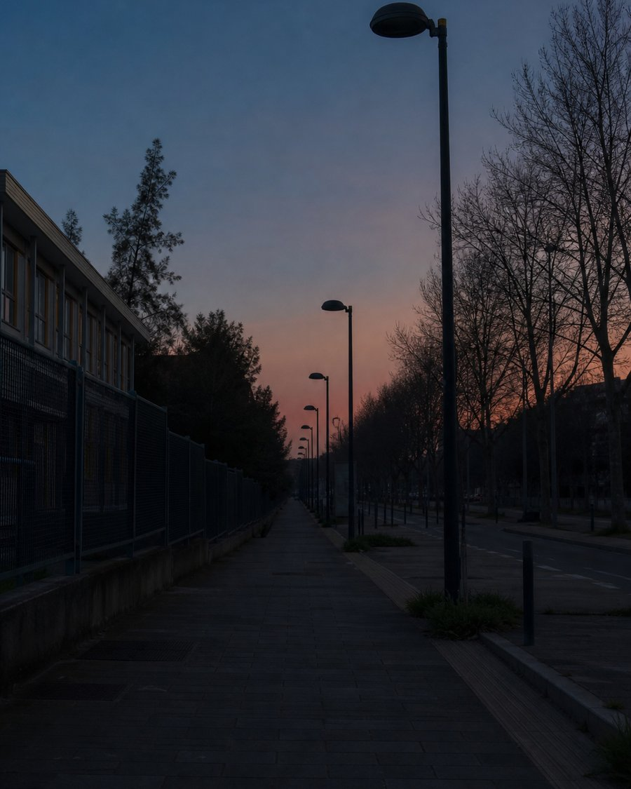
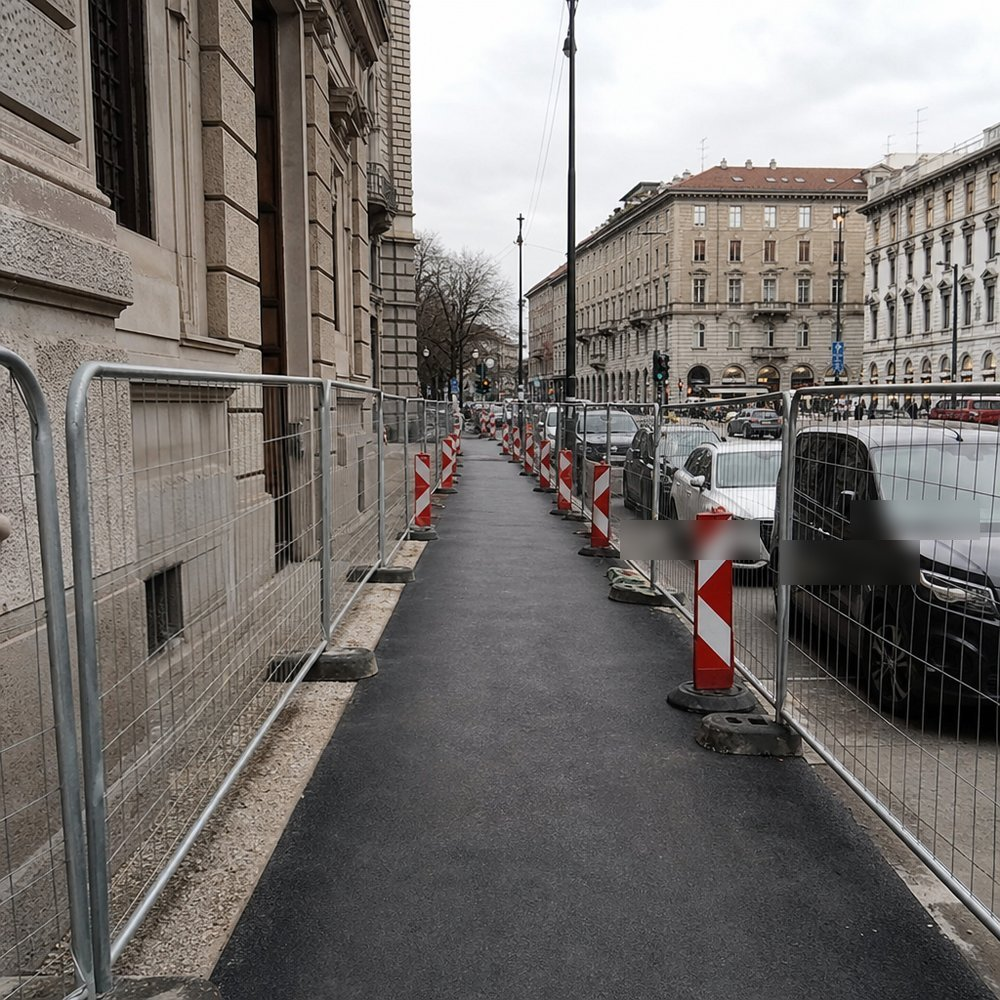

TOWN
Membro · Milano
Milano · Città Studi
SPAZIO PUBBLICO
Marciapiede danneggiato davanti alla scuola di via Padova
Stato civico: osservato — in attesa di attenzione locale
Davanti alla scuola di via Padova il marciapiede è sollevato e spezzato. Il passaggio pedonale resta irregolare per diversi metri e costringe chi cammina a avvicinarsi alla carreggiata, soprattutto nelle ore di entrata e uscita.
Perché conta qui
Qui passa ogni giorno chi accompagna i bambini a scuola e chi si muove a piedi nel quartiere. Un marciapiede danneggiato non è un dettaglio estetico: riduce la sicurezza di un tratto quotidiano e molto frequentato.
Chi è coinvolto
Famiglie con bambini, anziani, persone con mobilità ridotta e chi attraversa Città Studi a piedi nelle ore di punta.
Ultimo aggiornamento
Il segnale resta locale e aperto. Nessuna conferma rilevante di intervento è ancora disponibile in questo prototipo.
Cosa significa questo stato
«Osservato» significa che il problema è stato riconosciuto dalla comunità locale. Non implica una pratica ufficiale né un intervento già avviato.
Testimonianze dei membri
Confermato da 4 membri
-

Lucia · Isola
16 luglio 2026
Passo di qui ogni mattina con mia figlia. Il bordo sollevato obbliga a scendere verso la strada proprio davanti all’ingresso della scuola.
-

Marco · Porta Venezia
15 luglio 2026
Ho registrato il tratto a piedi ieri sera: si vede bene dove il marciapiede si interrompe e costringe a spostarsi.
0:47
-

Elena · Città Studi
14 luglio 2026
Anche per chi usa il bastone il passaggio è difficile. Una riparazione locale aiuterebbe molte persone del quartiere.